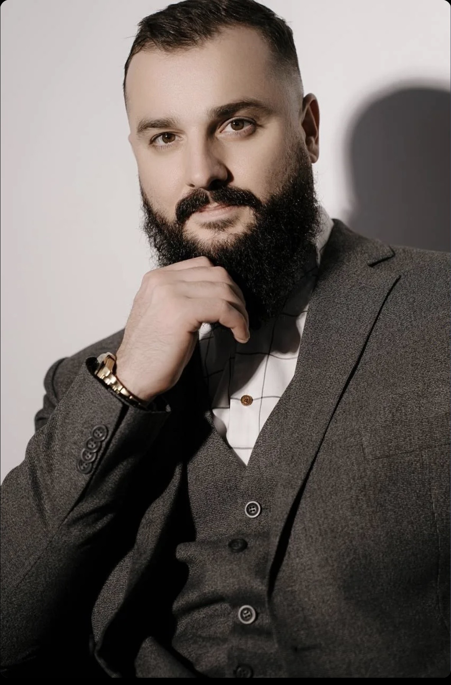
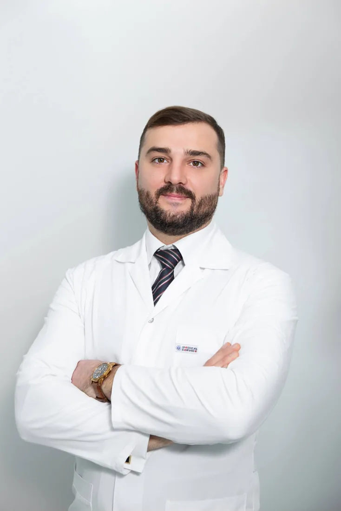

★★★★★
Удаление кист яичников«Несколько лет назад он удалил мне две огромные кисты на обоих яичниках — настолько виртуозно, что примерно через год я забеременела.»
ПроДокторов · июль 2024Профессиональная помощь женщинам в сложных клинических ситуациях. Спокойный подход, хирургическая практика и внимание к каждому пациенту.


Я придерживаюсь принципа: сложная клиническая ситуация требует не громких обещаний, а точной диагностики, продуманной тактики и ответственности на каждом этапе.
Более 15 лет в хирургии и более 3 000 успешно проведённых операций в год — опыт, который позволяет выбирать тактику, наиболее подходящую именно вам.
Плановая и экстренная гинекологическая хирургия. Выберите направление, чтобы увидеть перечень операций.
Органосохраняющие операции — в самом большом приоритете, даже тогда, когда все вокруг говорят удалять матку. Объём и доступ операции в каждом случае обсуждаются индивидуально.
Объём и доступ операции в каждом случае обсуждаются индивидуально.
Современная помощь — это не только технология операции. Это доверие, честный разговор и ответственность врача за пациента.
Философия работыТо, что пациентка обычно не видит: подготовка, оборудование, сама операция и команда, которая работает рядом.
Каждая операция начинается задолго до операционной: обследование, продуманный план, разговор с пациенткой и настрой всей команды.
Многие вмешательства выполняются лапароскопически — через небольшие проколы под видеоконтролем. Это меньше боли, почти незаметные следы и более быстрое восстановление.
Хирург видит всё на мониторе в многократном увеличении. Это позволяет работать точно и бережно, сохраняя здоровые ткани.
Рядом всегда ассистенты, операционная сестра и анестезиолог. Безопасность пациентки — это работа всей бригады, а не одного человека.
Фрагменты проверенных отзывов пациентов с ПроДокторов. Персональные данные пациентов не публикуются.
«Несколько лет назад он удалил мне две огромные кисты на обоих яичниках — настолько виртуозно, что примерно через год я забеременела.»
ПроДокторов · июль 2024«Я обошла многих, они разводили руками, а всё решаемо оказалось! Есть такие врачи с золотыми руками и сердцем.»
ПроДокторов · июль 2026«Благодарю Игоря Николаевича за верное решение. Чёткость и оперативность. А самое главное — качество операции и профессионализм.»
ПроДокторов · июль 2026«Чувствуешь, что ты не «очередной пациент», а человек, которому хотят помочь.»
ПроДокторов · июль 2026«Вы замечательный доктор, настоящий профессионал и просто прекрасный человек!»
ПроДокторов · август 2026«Главные слова доктора после консультации, что всё будет хорошо, — это очень вдохновляет.»
ПроДокторов · май 2026«Он всё разложил по полочкам. Если у вас есть какие-то проблемы или вопросы, советую идти только к нему.»
ПроДокторов · декабрь 2025«Чуткий, внимательный, всегда с улыбкой на лице и всегда на связи. Всегда приходит после операции и даёт рекомендации.»
ПроДокторов · март 2026«Он не обещал «идеального журнального фото», а говорил о гармонии и здоровье.»
ПроДокторов · февраль 2026«Игорь Николаевич быстро оценил ситуацию и взял меня на операцию. Вот что значит человек на своём месте!»
ПроДокторов · июль 2026Выберите удобный способ связи. В следующей версии можно подключить настоящую форму записи и расписание.